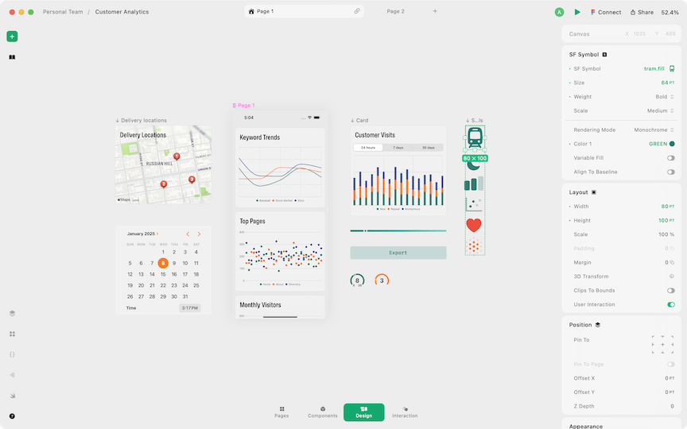
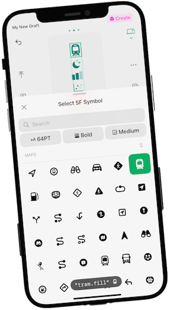
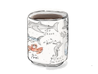

I'm Alexander Greene, a multi-disciplinary product designer somewhere in the San Francisco fog.
My engineering background helps me effectively lead projects—collaborating across teams and thinking logically about product requirements. I specialize in critically assessing user experiences and articulating the obstacles our users may face.
My inspiration comes from software, both delightful and frustrating, and occassionally from other disciplines like architecture and print.
Hiring? I'm looking to join a new team, let's chat!
Recent work
Designed tools for designers at
Play is a superpowered tool for designing mobile apps. I worked on both the iOS and macOS apps, unlocking native features for designers like Charts, Menus, and Dynamic Type. I led projects like Code Export and Monetization, working closely with engineers and researching Apple's documentation.


Read More
Digitized A Pattern Language, a favorite book
In the book, author Christopher Alexander describes 200+ design patterns for building homes, towns and cities. I wanted to re-imagine the dense book in a way that's easier to reference, or even extend in the future for adding more patterns of my own—which the author encourages.
Previous Work
Created , an app to replace all tracking apps
Frustrated with the mobile interface of spreadsheet software and the rigid nature of personal tracking apps, I redesigned them entirely. The result was a data collection tool flexible enough to track anything: health, entertainment, personal growth...
Read more
Built models to detect toxic content at Spectrum Labs
As a founding engineer, I bootstrapped machine learning models to detect harmful conversation in online communities, working through linguistic, technical, and design challenges. I designed notebooks for data exploration, and client dashboards for visualizing conversational health.
Other things I've done...
Acquired & redesigned
A macOS toolbar app that reminds you to take breaks from looking at your screen.
Built App Scout
Unreleased tool for aggregating listings of online businesses for sale.
Created WikiQuiz
Generated quizzes from Wikipedia pages using natural language parsing.
Developed novel applications
From 2009 to 2012, I published novelty iOS apps that accumulated 200k+ downloads.
Various arts & crafts
Recently I've been teaching myself printmaking. I also love to sketch-—I almost always put pen to paper when exploring ideas. From time to time, I create pennants.


If you'd like to grab coffee or chat over video, shoot me a message! You can find me on Bluesky, Twitter, and good old email.